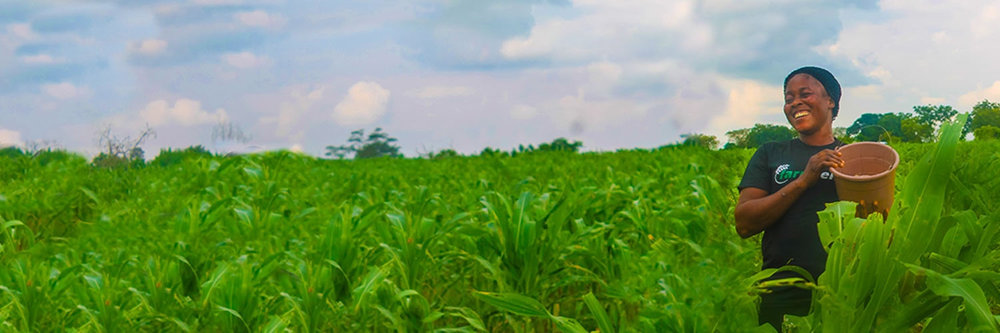
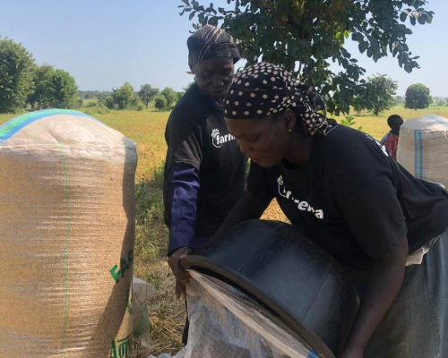
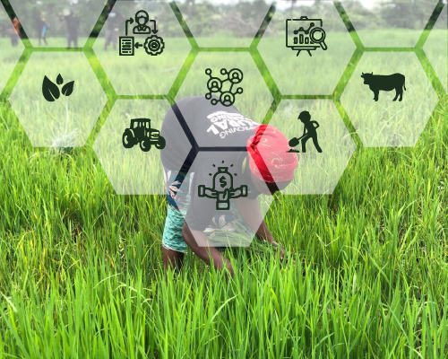
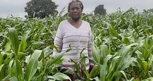
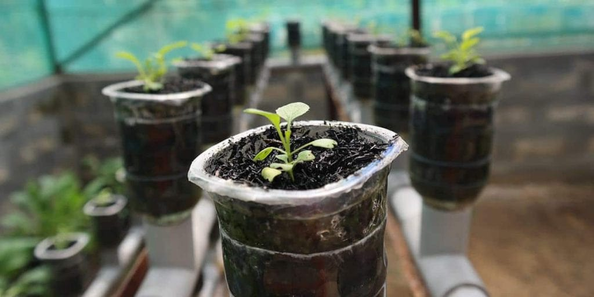
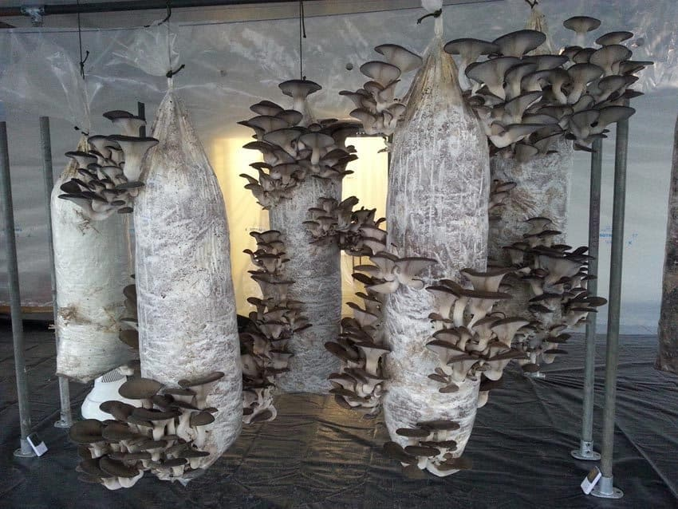
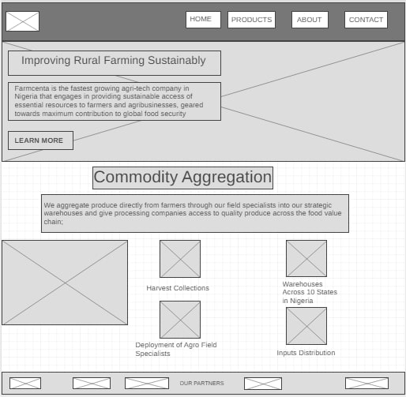
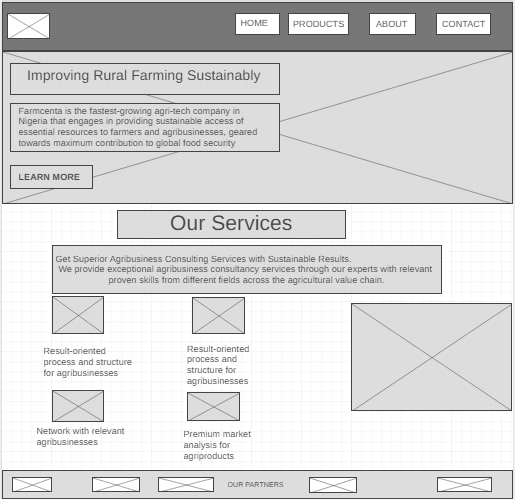
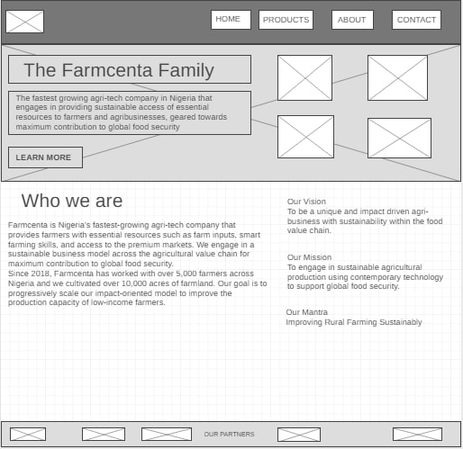

Overview
Purpose
What could be more important than eating fresh foods that are free from contaminations? At Bizman farm we exhibit and observe hygienic practices that makes our farm produce to be safe. We understand the challenges of getting those groceries you need amidst busy schedules, that is why we can bring our produce to your doorsteps as they come straight from the farm. Our meat, vegetables, and milk are top tier, and we are proud to say we are one of the top most credible suppliers of farm produce. We assure each of our customers that a chance with us will be something that is worth it.
Audience
The Purpose of this site is to provide basic information about ericoBizman farm. It will contain navigations that online users can click and navigate through that will enable them to know more about our various farm produce and services. To make navigation easy for users, links will respond to cursor hoverings as a color effect would be triggered. The paragraph would have diffeent colors and font.
Branding
eBizman
Style Guide
Color Palette
Palette URL: https://coolors.co/618a69-a4a65c-e7c24f-a43312-381d2a-aabd8c| Primary | Secondary | Accent 1 | Accent 2 |
|---|---|---|---|
| [#618A69] | [#A4A65C] | [#A09141] |
Typography
Heading Font: [ Lato, Helvetica, sans-serif]
Paragraph Font: [san-serif]
Normal paragraph example
About us
ericoBizman is a family-farm that focuses on improving the quality of living by providing good and hygienic food that the body needs to flourish. The desire is to create a family kind of relationship with the customers in order to know how to better serve their needs. While providing fresh, green, and hygienic farm produce, the vision is to create a society where everyone can have a farm without being there. There are opportunites for investment, which is a way we grow to have a larger family.
We Contribute to Feeding Our World
ericoBizman's Purpose to Contribute to Feeding Our World drives our commitment to global food and agriculture. Our diverse portfolio spans from the soil and the sea to dinner tables around the world, and the agriculture-related interests in between. We pioneer innovations in plant nutrition and food processing, research new ways to feed animals and sustain ecosystems and strive to feed a growing global population. Our diverse portfolio across global agriculture and food gives us a broader view of the entire food system unique to any other farm.
SUSTAINABILITY
Our Responsibilities
Our passion for people starts with a strong commitment to our employees and communities. We are dedicated to ensuring our employees enjoy equal opportunities, a safe and healthy work environment and are treated with fairness, respect and dignity. We are also tenacious in making sure all of our global operations function safely, efficiently and securely. Farming for Today and the Future We share the pride of all Africans in our natural resources and protect the environment by maintaining and improving soil health, limiting water usage, and planting trees and pollinators.
Navigation
Site Map
Content
Home page
Improving Rural Farming Sustainably
Improving Rural Farming Sustainably We are the fastest growing agri-tech company in Nigeria that engages in providing sustainable access of essential resources to farmers and agribusinesses, geared towards maximum contribution to global food security
Images for the Home page
 Our Services
Get Superior Agribusiness Consulting Services with Sustainable Results. We provide exceptional agribusiness consultancy services through our experts with relevant proven skills from different fields across the agricultural value chain.
Images for the Page 2
 Our Projects
Aquaponics is a combination of a couple of different farming techniques: Hydroponics, which is growing plants without the use of soil, and aquaculture, which is growing fish or other aquatic animals.
Mushrooms are a crop that most people don't consider when it comes to farming. But there's a big demand for them, and often a lack of supply depending on where you're located.
Images for the Page 3
 Wireframes
Create three wireframes for your site. One for each page and list them here
Home
[Any additional details about home that the wireframe does not make clear]
[Page 2]
[Any additional details about page 2 that the wireframe does not make clear]
[Page 3]
[Any additional details about page 3 that the wireframe does not make clear]
+